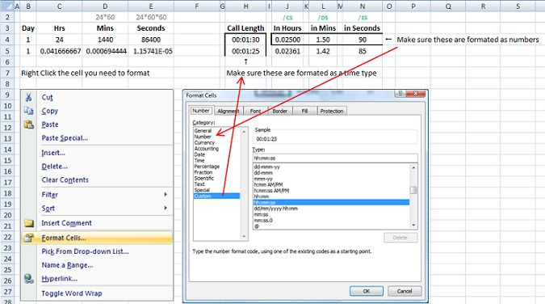

Code
I'm gonna add up some code I've made for certain reasons
So I was asked by a mate to work out time in mins/secs etc from time worked.
I wasn't given any information on how the time was entered in a worksheet so I made some assumptions.
There maybe a function in excel already available but here's what I can up with without checking.
Excel treats everything as numbers and a day is 1 unit, therefore you can work out how many hrs/mins/secs are in a day
then use these calculations to show the time worked in the units you wish.
